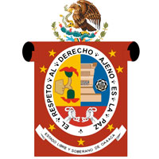

Oaxaca se ubica en la región mesoamericana en donde se manifestó la cultura zapoteca, que floreció en el área de Monte Albán a partir del año 900 a. C. y más tarde, en el año 1300, la cultura mixteca, que a su vez se desarrolló hasta su posterior dominación por parte de los conquistadores españoles. Artículo principal: Cultura zapoteca Ruinas de Monte Albán. Poco se sabe sobre el origen de los zapotecas. A diferencia de la mayoría de los indígenas de Mesoamérica, ellos no tenían ninguna tradición o leyenda sobre su migración, sino que creían que nacieron directamente de las rocas, árboles, y de los jaguares. Una de las posibles teorías acerca del origen de los zapotecas, es la relatada por el padre Francisco De Burgoa, y el padre José Antonio Gay autor de "Historia de Oaxaca" donde aseguran que los zapotecos se establecieron primitivamente en Teotitlán del Valle, noticia que recibió de antiguas tradiciones y pinturas que apoyan con el respecto, del cual quizá hubo una movilización de una parte de la población a lo que seria el actual valle de Etla. Esos primitivos habitantes en Teotitlán del Valle pudieron haber sido grupos olmecas en busca de nuevos territorios. Las primeras manifestaciones de los zapotecas es el centro ceremonial de San José Mogote, una aldea ubicada en el valle de Etla, uno de los Valles Centrales de Oaxaca. La aldea de Mogote (cuyo nombre original es desconocido) fue la más importante de las que se establecieron en la región, y tuvo su mayor apogeo hacia el final del Período Preclásico Temprano. Mogote era una aldea zapoteca de agricultores, que controlaba la región central de Oaxaca y mantenía relaciones con el área olmeca. Su declinación está claramente asociada con la construcción de Monte Albán, ciudad que fue contemporánea a Teotihuacán y a las grandes ciudades mayas en el sureste. La fundación de Monte Albán se sitúa alrededor de los años 500 a. C. al 100 a. C., adquiriendo una importancia política y económica importantísimas en la región. Durante el Período Clásico es cuando alcanza su mayor crecimiento. Monte Albán recibe influencias teotihuacanas y mayas. Aproximadamente durante los años 200 d. C. al 600 d. C. Monte Albán alcanza su máximo auge, siendo la ciudad —capital del imperio Zapoteca— más importante de la región, contando con cerca de 40 mil habitantes en los 20 km² cercanos al centro ceremonial. A partir del año 800 d. C. y de forma gradual, Monte Albán pierde importancia hasta el año 1325 d. C. cuando los mixtecos, provenientes del norte, invaden el valle de Oaxaca y ocupan la antigua capital zapoteca, junto con Mitla. Los zapotecas capturaron Tehuantepec. Para la mitad de siglo XV, los zapotecas y mixtecas lucharon para evitar que los mexicas ganaran el control de las rutas comerciales hacia Chiapas, Veracruz y Guatemala. Bajo el mando de su gran rey, Cosijoeza, los zapotecas soportaron un largo sitio en la montaña rocosa de Guiengola, manteniendo la vista sobre Tehuantepec, y manteniendo con éxito la autonomía política mediante una alianza con los mexicas hasta la llegada de los españoles. En Oaxaca las enormes cadenas montañosas sirven como barreras para los vientos que proceden del Golfo de México y del Océano Pacífico. Oaxaca presenta gran variedad climática, así, en su territorio hay climas cálidos, semicálidos, semifríos, semisecos y templados. Los climas cálidos en conjunto abarcan poco más de 50% de la superficie total de la entidad, se producen en las zonas de menor altitud (del nivel del mar a 1.000 m.), se caracterizan por sus temperaturas medias anuales que varían de 22 °C a 28 °C y su temperatura media del mes más frío es de 18 °C o más.Oaxaca es conocida por su variedad gastronómica, condimentos y sazón. Entre los diversos platillos y alimentos se encuentran: tlayudas, tamales, tejate, pozonque, agua de chilacayota y de chía, memelas, totopos, empanadas, quesillo, chorizo, cecina, tasajo, pinole, pan de muerto oaxaqueño, pan de yema, pan de sal, chocolate, moles, productos del mar, etc.; además, es de los estados donde más variedades de insectos se consumen, como los chapulines, los gusanos de maguey y las chicatanas (hormigas).Aún cuando la industria ha alcanzado muchos platos de su gastronomía, en especial el Chocolate, aún existen grupos artesanales que rescatan la preparación y el sabor original, como los llamados "chocolateconalas". Así mismo pequeños grupos artesanales para otros productos pueden encontrarse en la periferia de la ciudad. Filete de pescado a las hierbas, Oaxaca, Méx. También destaca el mezcal, bebida que se fabrica con la piña o corazón de agave. En los últimos años, el mezcal ha tenido gran aceptación y difusión en diversos lugares, esto sobre todo desde 1997, año en que se implementó la Feria internacional del Mezcal, realizada en la ciudad de Oaxaca
